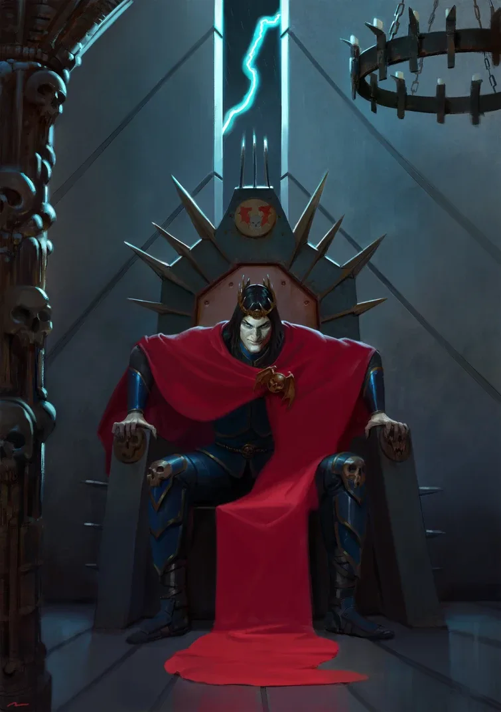

01ภาพรวม


02ต้นกำเนิด — ผู้ล่าในความมืด
Curze ตกลงบนดาว Nostramo ที่ไม่มีแสงอาทิตย์ เต็มไปด้วยอาชญากรรม เขาเติบโตคนเดียว และเห็นนิมิตอนาคตที่เต็มไปด้วยความตายตั้งแต่เด็ก
03The Night Haunter
เขาล่าอาชญากรอย่างโหดร้าย ทิ้งศพเป็นคำเตือน จนดาวทั้งดวงสงบลงเพราะความกลัว — แต่เขาเชื่อว่านี่คือความยุติธรรม
04พบจักรพรรดิ
จักรพรรดิมาถึงในปี 896.M30 Curze ยอมรับบิดาแต่ถูกนิมิตอนาคตอันมืดมนหลอกหลอนอยู่เสมอ ตอนพบพี่น้อง Fulgrim เป็นคนเดียวที่เขาไม่เห็นนิมิตความรุนแรง และใจดีกับเขา
05ความโหดร้ายของ Night Lords
Night Lords ใช้ความกลัวพิชิตดาว หลังจาก Curze จากไป Nostramo กลับสู่ความโกลาหล เขาจึงทำลายดาวบ้านเกิดทิ้งเอง พี่น้องหลายคนรวมถึง Vulkan และ Dorn ต่อต้านวิธีการของเขา เขาจู่โจม Dorn จนเกือบตายก่อนหนีไป
06Horus Heresy
Curze เข้าร่วมฝ่ายทรยศที่ Isstvan V ช่วยชีวิต Lorgar จาก Corax จับ Vulkan ไปทรมาน และทำสงครามยาวกับ Lion (Thramas Crusade) หลบซ่อนบนยาน Dark Angels จนไปอาละวาดบน Macragge
07ความตายที่เขาเลือก
หลัง Heresy จักรวรรดิส่งนักฆ่า Callidus ชื่อ M'Shen ไปที่ Tsagualsa Curze เห็นนิมิตล่วงหน้าแต่ไม่หนี เขาปล่อยให้ถูกฆ่าเพื่อพิสูจน์ว่าจักรวรรดิก็ใช้ความกลัวและการลงโทษเหมือนที่เขาทำ
08นิสัยและบุคลิก
- ถูกนิมิตแห่งความตายหลอกหลอน
- เชื่อในความยุติธรรมแบบลงโทษ
- ไม่บูชาเทพ Chaos
- อ่อนไหวและเจ็บปวดลึก ๆ
09อาวุธและยุทโธปกรณ์
10ความสัมพันธ์กับจักรพรรดิ

จักรพรรดิแห่งมนุษยชาติ
บิดาผู้สร้างไม่มีบันทึก
ไม่มีบันทึก
Konrad Curze คิดอย่างไรกับจักรพรรดิ
- พบกันครั้งแรกยอมรับบิดา แต่เห็นนิมิตอนาคตที่มืดมนตลอดเวลา
- Great Crusadeเชื่อว่าตนทำตามสิ่งที่บิดาต้องการ — การลงโทษ
- ตอนตายยอมรับความตายเพื่อพิสูจน์ความหน้าซื่อใจคดของจักรวรรดิ
จักรพรรดิคิดอย่างไรกับ Konrad Curze
- ภาพรวมจักรพรรดิใช้ Night Lords เป็นเครื่องมือแห่งความกลัว แต่สั่งให้ Curze กลับ Terra เพื่อรับโทษก่อน Heresy — การตัดสินที่ Curze ไม่เคยยอมรับ
11ความสัมพันธ์กับพี่น้อง Primarch ทุกคน
มุมมองของ Konrad Curze ต่อพี่น้องแต่ละคน และมุมมองของพี่น้องต่อเขา — เรียงตามหมายเลข Legion กดชื่อเพื่อไปอ่านเรื่องของพี่น้องคนนั้น ดูภาพรวมทุกคู่ได้ที่ แผนผังความสัมพันธ์ของ Primarch

Lion El'Jonson
ศัตรูอยากทำลาย Lion ทั้งร่างกายและจิตใจ
รังเกียจ Curze และไล่ล่าเขาอย่างหมกมุ่น
- Heresy — Thramas CrusadeCurze ทิ้งสัญญาณล่อให้ Lion มาเจรจา แล้วดูหมิ่นเขาจน Lion ต่อย ทั้งสองดวล Curze เกือบบีบคอ Lion จนตาย องครักษ์ Dark Angels แทงหลัง Curze ช่วยไว้
- ThramasLion ซุ่มโจมตีกองเรือ Night Lords ทำลายไปราวหนึ่งในสี่ และทำร้าย Curze จนบาดเจ็บสาหัส
- MacraggeCurze แอบซ่อนบนยานของ Lion ไปถึง Macragge Lion ล่าจนจับได้และนำมาไต่สวน Curze บอกว่า "มีสัตว์ประหลาดในหัวที่หยุดไม่ได้"

Fulgrim
เพื่อน / พันธมิตรนับถือ Fulgrim อย่างเงียบ ๆ เพราะเป็นคนเดียวที่เขาไม่เห็นนิมิตความรุนแรง
ใจดีกับ Curze ตั้งแต่แรกพบ และช่วยเขาเวลาเกิดอาการ
- พบกันครั้งแรกFulgrim ใจดีกับ Curze และ Curze พบว่าไม่เห็นนิมิตความรุนแรงใด ๆ เมื่อมอง Fulgrim — สิ่งที่หายากมากจนเขารู้สึกผูกพัน
- Great Crusadeเมื่อ Curze มีอาการชัก Fulgrim รีบเข้าไปช่วย แต่ต่อมา Fulgrim นำเรื่องนิมิตของ Curze ไปปรึกษา Dorn ทำให้ Dorn เผชิญหน้ากับ Curze

Perturabo
ซับซ้อนไม่มีบันทึกความรู้สึก
สร้างคุกพิเศษให้ Curze ตามคำขอ
- HeresyPerturabo สร้างเขาวงกตคุกบนยาน Nightfall ให้ Curze ตามแบบห้องส่วนตัว Cavea Ferrum ของตัวเอง — ที่ Curze ใช้ขังและทรมาน Vulkan

Jaghatai Khan
ไม่มีบันทึก- ภาพรวมไม่มีบันทึกเหตุการณ์สำคัญระหว่างทั้งสองโดยตรงในเนื้อเรื่องที่เผยแพร่ ทั้งคู่อยู่คนละฝ่ายในสงคราม Horus Heresy

Leman Russ
ไม่มีบันทึก- ภาพรวมไม่มีบันทึกเหตุการณ์สำคัญระหว่างทั้งสองโดยตรงในเนื้อเรื่องที่เผยแพร่ ทั้งคู่อยู่คนละฝ่ายในสงคราม Horus Heresy

Rogal Dorn
ศัตรูจู่โจม Dorn จนเกือบตาย
ไม่ยอมให้ Curze ดูหมิ่นจักรพรรดิ
- พบกันครั้งแรกCurze เห็นนิมิตความตายของ Dorn ตั้งแต่พบกันบน Nostramo
- Great Crusade — CherautDorn เผชิญหน้ากับ Curze เรื่องวิธีการโหดร้าย Curze จู่โจม Dorn จนพบในสภาพหมดสติและเนื้อถูกฉีก ก่อนหนีไป
- หลังสงครามก่อนตาย Curze ยังพูดว่า Dorn จะตายโดยถูกฉีกเป็นชิ้นบนยาน Sword of Sacrilege

Sanguinius
ซับซ้อนอธิบายปรัชญาความกลัวให้ Sanguinius ฟัง
นำตัว Curze ไปตามนิมิตที่ Davin
- Great CrusadeCurze เคยอธิบายความเชื่อเรื่องการใช้ความกลัวให้ Sanguinius ฟัง
- Imperium SecundusSanguinius คัดค้านการทิ้งระเบิดประชาชนเพื่อฆ่า Curze และเข้าร่วมการไต่สวน Curze
- DavinSanguinius พา Curze ไปด้วยตามนิมิตของเขา

Ferrus Manus
ไม่มีบันทึก- ภาพรวมไม่มีบันทึกเหตุการณ์สำคัญระหว่างทั้งสองโดยตรงในเนื้อเรื่องที่เผยแพร่ ทั้งคู่อยู่คนละฝ่ายในสงคราม Horus Heresy

Angron
ซับซ้อนไม่มีบันทึกความรู้สึก
ถูกขังในเขาวงกตของ Curze
- Heresyลูกน้องของ Angron ร่วมมือกับ Night Lords ส่ง Angron ไปขังในเขาวงกตบนยาน Nightfall ที่ Curze ใช้ทรมานเชลย

Roboute Guilliman
ศัตรูพยายามฆ่า Guilliman ด้วยกับดัก
ยืนยันให้ Curze ได้รับการไต่สวนอย่างเปิดเผย
- Imperium SecundusCurze หลบบนยาน Dark Angels มาถึง Macragge ล่อ Guilliman และ Lion เข้ากับดักแล้วถล่มอาคารใส่
- การไต่สวนGuilliman ยืนยันให้ Curze ได้รับการไต่สวนอย่างเปิดเผยแทนการประหาร

Mortarion
เพื่อน / พันธมิตรไม่มีบันทึกความรู้สึก
หนึ่งในสองพี่น้องที่ Mortarion ใกล้ชิด
- Great CrusadeMortarion ห่างเหินจากพี่น้องทุกคน ยกเว้น Horus และ Curze

Magnus the Red
ไม่มีบันทึก- ภาพรวมไม่มีบันทึกเหตุการณ์สำคัญระหว่างทั้งสองโดยตรงในเนื้อเรื่องที่เผยแพร่ ทั้งคู่อยู่ฝ่ายทรยศ

Horus Lupercal
ซับซ้อนเข้าร่วม Horus แต่ไม่มีใครรู้เหตุผลแท้จริง
ต้องจัดการกับพี่น้องที่คาดเดาไม่ได้
- Great Crusadeจักรวรรดิเรียก Curze กลับไปรับโทษ แล้วให้เข้าร่วมกองเรือที่ไปจัดการ Horus ที่ Isstvan
- HeresyCurze หันหลังให้จักรพรรดิที่ Isstvan V ไม่มีใครรู้เหตุผลที่แท้จริง

Lorgar Aurelian
ซับซ้อนเข้าช่วย Lorgar ในวินาทีสุดท้าย
เป็นหนี้ชีวิต Curze
- Heresy — Fidelitas LexLorgar จัดประชุมลับของฝ่ายทรยศ Sevatar แห่ง Night Lords เป็นคนแรกที่ตะโกน "Death to the False Emperor!"
- Isstvan VCorax เอาชนะ Lorgar และกำลังจะประหาร Curze เข้ามาขวางในวินาทีสุดท้ายและช่วยชีวิต Lorgar ไว้

Vulkan
ศัตรูทรมาน Vulkan หลายเดือนเพื่อทำลายจิตใจ
เกลียดความโหดร้ายของ Curze ตั้งแต่ Great Crusade
- Great Crusade — 154-6Salamanders รบร่วมกับ Night Lords Vulkan ไม่พอใจความโหดร้ายจนต่อสู้กับ Curze และรายงานต่อ Horus และ Dorn — ความแค้นเริ่มขึ้น
- หลัง Isstvan VCurze จับ Vulkan ที่หมดสติไปขัง ทรมานและฆ่าซ้ำหลายเดือน ใช้เวทมนตร์หลอกให้ Vulkan สู้กับภาพลวงของ Corax — แต่ Vulkan ไม่ยอมแตกหัก

Corvus Corax
ศัตรูดูถูก Corax ว่าขี้ขลาด และเกือบฆ่าเขา
ศัตรู
- Isstvan VCurze เข้าช่วย Lorgar ต่อสู้กับ Corax ที่เหนื่อยล้า จับข้อมือไม่ให้บินหนี แล้วสั่งให้ Corax ที่ทรุดลงลุกขึ้นด้วยความรังเกียจ Corax จุดเครื่องบินจนดึงกรงเล็บหลุดออกมาได้ ท่ามกลางเสียงหัวเราะของ Curze

Alpharius Omegon
ไม่มีบันทึก- ภาพรวมไม่มีบันทึกเหตุการณ์สำคัญระหว่างทั้งสองโดยตรงในเนื้อเรื่องที่เผยแพร่ ทั้งคู่อยู่ฝ่ายทรยศ
?Primarch ที่ II และ XI (ถูกลบ)
ไม่มีบันทึก- ภาพรวมทุกบันทึกของ Primarch ที่ 2 และ 11 ถูกลบ พี่น้องที่เหลือถูกห้ามพูดถึง ความสัมพันธ์ใด ๆ จึงไม่ปรากฏในประวัติศาสตร์